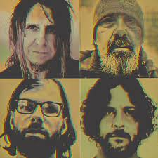

Fundada em 1988 na Louisiana, a banda têm sido uma das mais importantes bandas que emergiram do cenário do metal
em New Orleans. Eyehategod recebeu influências de Melvins, The Obsessed, Black Flag, e Black Sabbath.
O som do álbum In the Name of Suffering recebeu elogios por seu estilo áspero, e é visto como um dos
primeiros, bem como um dos mais importantes álbuns de sludge metal da década de 1990. Enquanto o
álbum Take as Needed for Pain foi muito mais limpo, um som mais distinto, com riffs mais definidos.
Southern rock, blues e doom são mais distintos e percebidos neste álbum.

Take as needed for Pain
Eyehategod começaram a gravar Take as Needed for Pain em 1993. O álbum foi gravado no Studio 13, no 13º andar de um departamento de
vendas abandonado em Nova Orleans. O som de Take as Needed for Pain foi muito mais limpo, um som mais distinto, com riffs mais definidos. O Southern Rock,
blues e doom são mais distintos e percebidos neste álbum. Depois do lançamento, a banda entrou em turnê com bandas como White Zombie e Corrosion of
Conformity. Depois da turnê, os membros da banda tomaram outros rumos. Mike Williams ocupou-se contribuindo para a revista Metal Maniacs. Jimmy Bower
tocou bateria no álbum Broken Glass da banda Crowbar, e também no álbum NOLA, do Down. Brian Patton gravou o álbum do Soilent Green, Pussysoul.
Dopesick
Dopesick é o terceiro álbum de estúdio da banda, lançado em 2 de abril de 1996. Foi relançado em 2006 como parte da
série de 20 anos da Century Media com três faixas bônus que foram gravadas durante as sessões de gravação originais do Dopesick.
Após o lançamento de Take as Needed for Pain, o álbum anterior do Eyehategod, a banda gravou várias demos, que foram lançadas em vários discos de 7" e splits
em várias gravadoras, antes de finalmente se estabelecerem no outono de 1995 para gravar um álbum completo, Dopesick.
As sessões de gravação foram infamemente caóticas e envolveram o dono do estúdio ligando para a Century Media para perguntar se a banda era mentalmente
instável e ameaçando expulsá-los. Este incidente em particular ocorreu depois que Mike Williams tentou gravar o som de vidro quebrando para a introdução
do álbum, quebrando uma garrafa no chão do estúdio. No processo, ele abriu a mão e sangrou por todo o chão do estúdio; esta gravação chegou ao registro como
a introdução da primeira faixa, "My Name Is God (I Hate You)". Um dos membros da banda então aparentemente espalhou as palavras "Hell" e "Death to Pigs" no
sangue de Williams.
"Dixie Whiskey" tem
um riff principal que soa, supostamente, como um Black Sabbath criado no pântano. de acordo com William York da AllMusic. Músicas como "Peace Thru War (Thru
Peace and War)" e "Lack of Almost Everything" alternam seções de hardcore de ritmo acelerado com grooves mais lentos. Dopesick soa um pouco diferente dos
discos anteriores da banda porque foi produzido para soar mais denso e pesado; com a bateria mais na frente na mixagem e as guitarras soando especialmente
graves. Gino Filicetti, do Chronicles of Chaos, chegou ao ponto de descrever os vocais de Michael Williams como "cheios de vômito" em uma revisão de 1996
do álbum para o webzine.
Southern Discomfort
Southern Discomfort é uma coletânea de raridades da banda de sludge metal Eyehategod, lançada em 25 de janeiro de 2000. O título é uma referência à bebida
alcoólica Southern Comfort. As faixas 1-6 são demos da era Take as Needed for Pain que acabaram em splits e singles. As faixas 7-9 são outtakes das sessões
originais do Dopesick. Essas faixas mais tarde apareceram nas reedições de 2006 da Century Media de cada álbum. Certas edições deste álbum apresentam uma
caveira vermelha na capa em vez de uma branca.